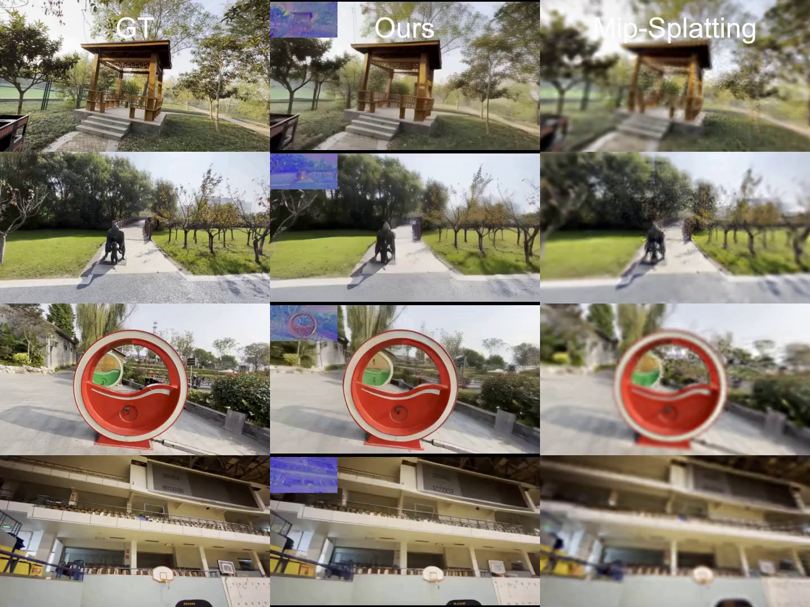

|
Xi Liu Welcome to my homepage! I'm a second year Computer Science PhD student at Clemson University, advised by Prof. Siyu Huang in Clemson University. I got my master degree in Computer Science from DIKU, University of Copenhagen, advised by Prof. Serge Belongie, I'm also an affiliated researcher of the Poineer Center for AI. Prior to DIKU, I obtained my B.S. in Computer Science and Technology from Jilin University. My reseach focuses on Generative models, Differentiable SVGs, 3D Reconstruction, 3D world understanding. Looking for the internship, feel free to contact me if you think my research work is interesting. |
{kind=link}
ResearchI'm interested in computer vision/graphics, generative AI, and automomous driving. Most of my research is about inferring editable video and 3D scene generation, and 3D world understanding. |
|
|
Bézier Splatting for Fast and Differentiable Vector Graphics
Xi Liu*, Chaoyi Zhou*, Nanxuan Zhao, Siyu Huang, NeurIPS, 2025 project page / arXiv This work introduces a new differentiable VG representation, dubbed Bézier splatting, that enables fast yet high-fidelity VG rasterization. |

|
3DGS-Enhancer: Enhancing Unbounded 3D Gaussian Splatting with View-consistent 2D Diffusion Priors
Xi Liu*, Chaoyi Zhou*, Siyu Huang, NeurIPS, 2024 project page / arXiv We leverage 2D video diffusion priors to address the challenging 3D view consistency problem, reformulating it as achieving temporal consistency within a video generation process. |
|

|
Latent Radiance Fields with 3D-aware 2D Representations
Chaoyi Zhou*, Xi Liu*, Feng Luo, Siyu Huang ICLR, 2025 project page / arXiv / code In this work, we propose a method to achieve 3D-aware 2D representations and enable 3D reconstruction in the latent space. |
Academic ServiceConference Reviewer: ICML 2025, ICLR 2025, NeurIPS 2024. |